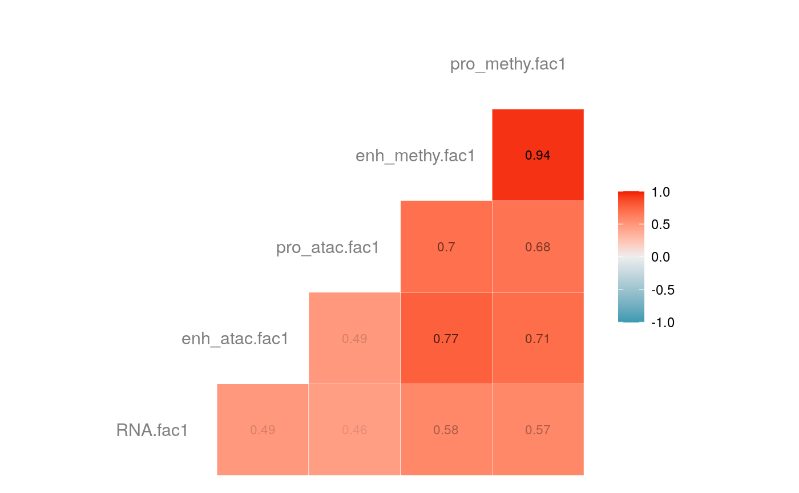
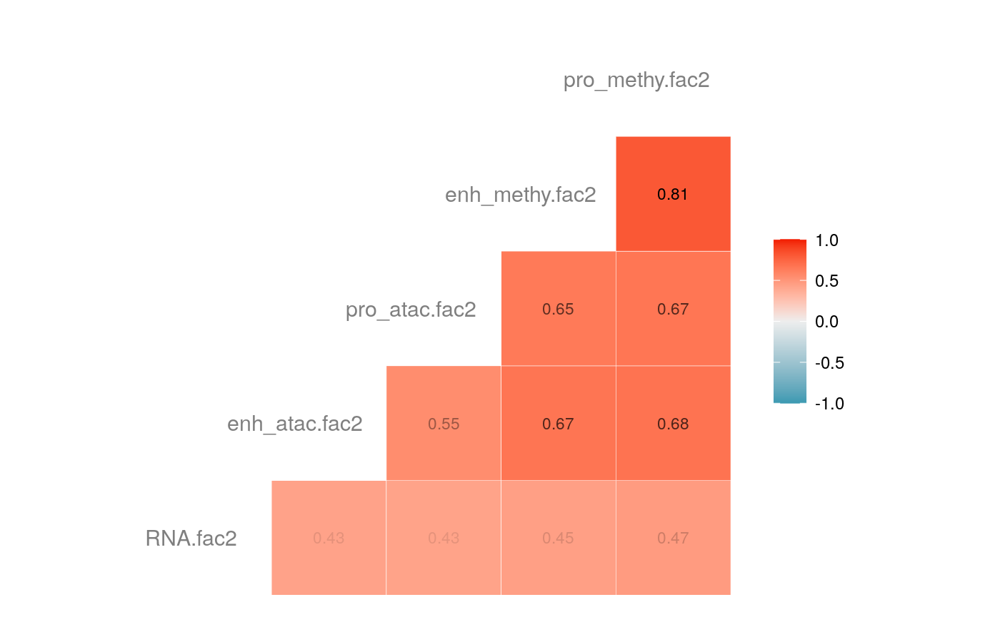
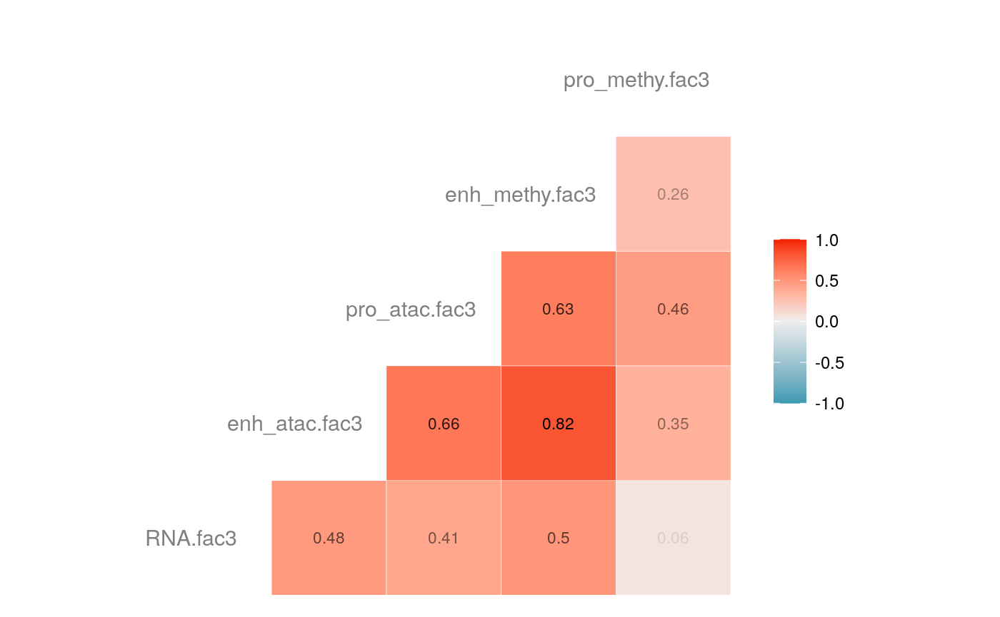
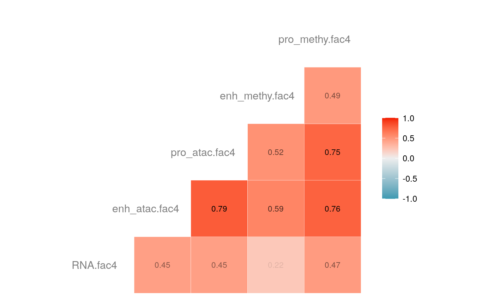
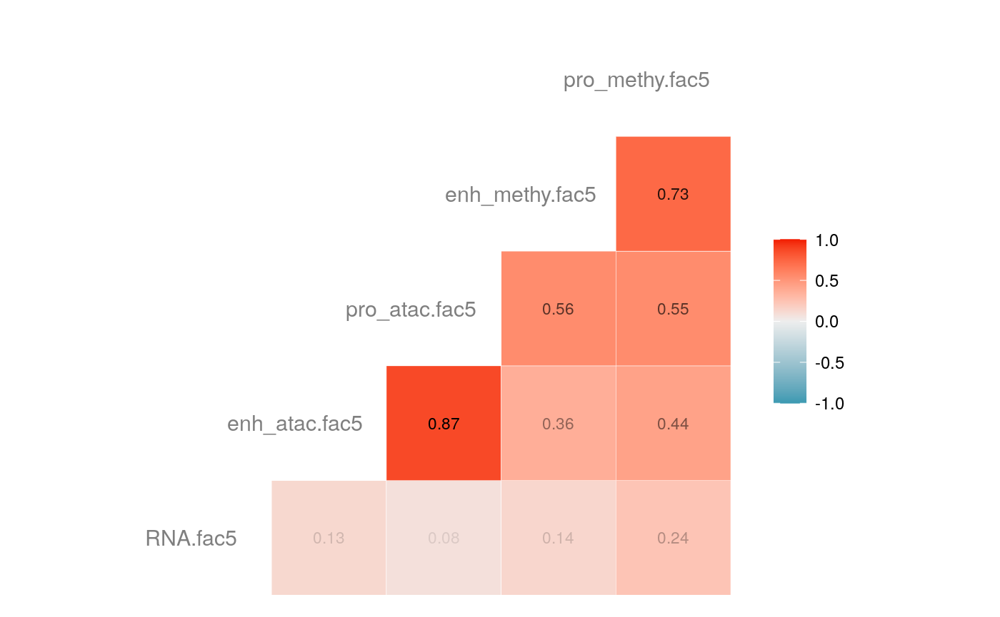
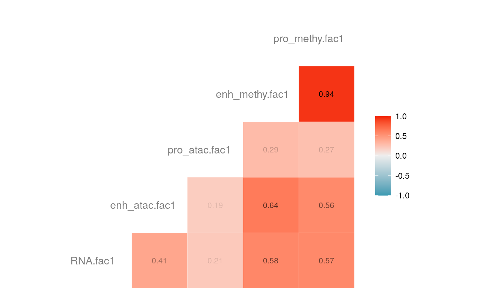
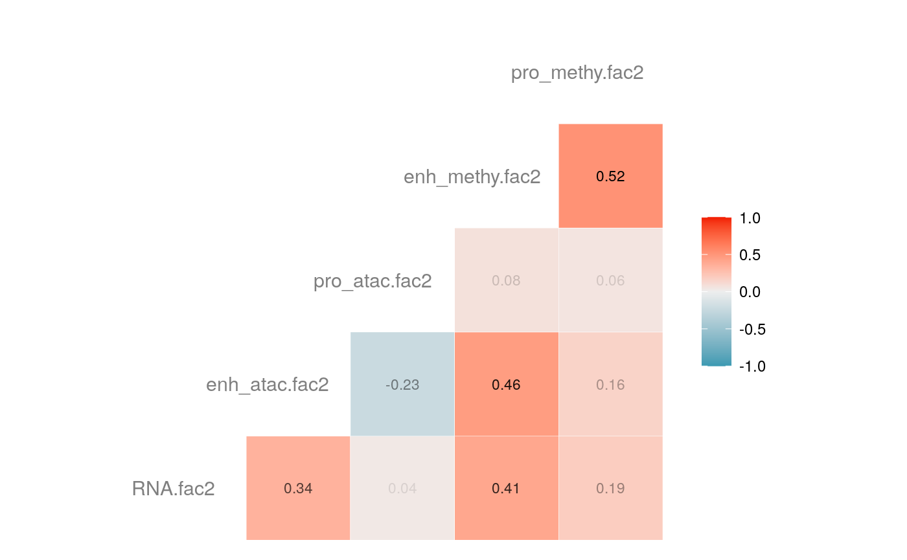
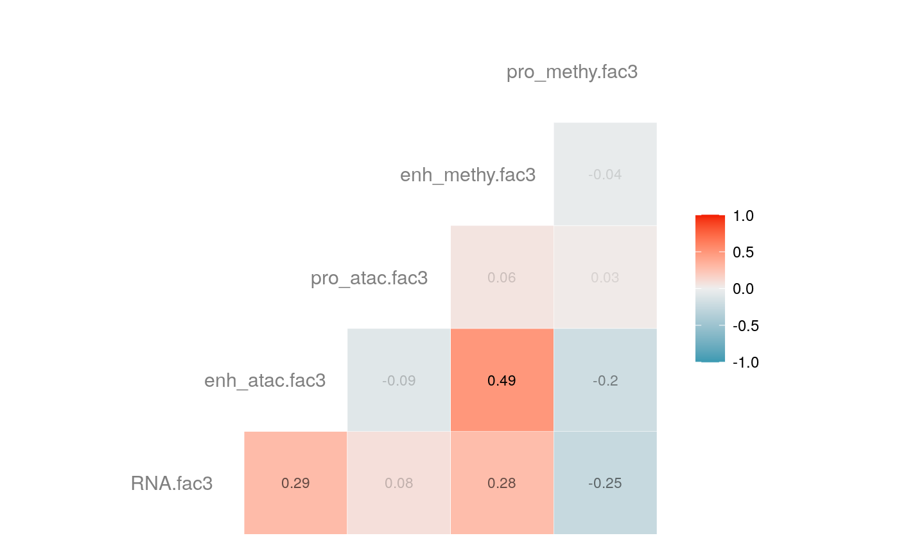
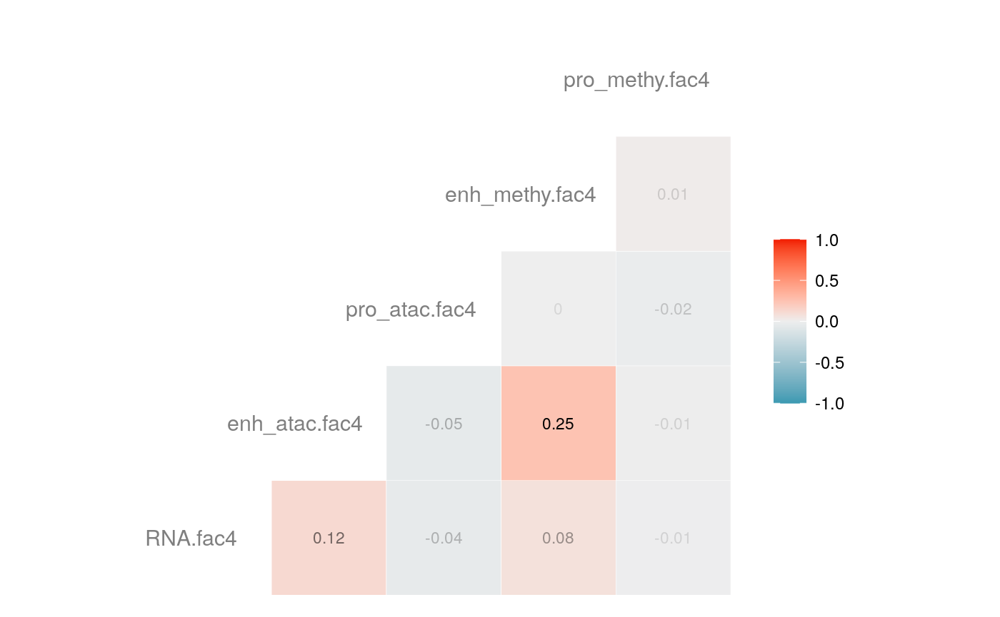
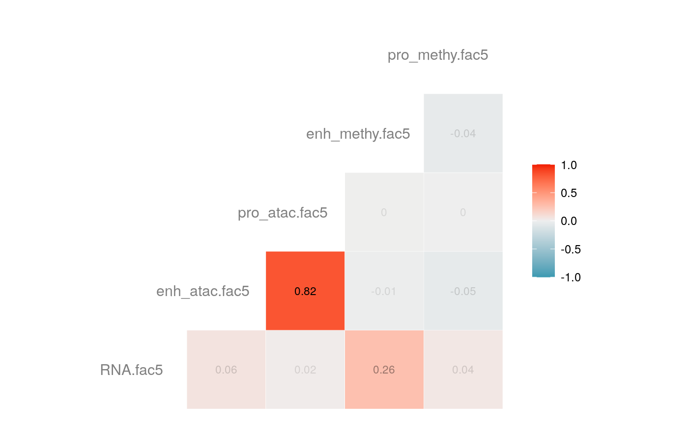

vignettes/MOFA-scNMTseq.Rmd
MOFA-scNMTseq.RmdTo DO
mofa_maxiter <- params$mofa_maxiter which_py <- params$which_py savedata <- params$savedata
## directory to save the outputs if (!dir.exists('savedata')) { dir.exists('savedata') }
Name the views for convenience
views<-c("RNA expression","Enhancer accessibility", "Promoter accessibility","Enhancer methylation", "Promoter methylation" ) views_nick<-c("RNA","enh_atac","pro_atac","enh_methy","pro_methy") nfactor<-5
Below is the code used for running the cross-validation, which takes approximately 2 hours. This code chunk is unevaluated, and instead we load the saved objects in the previous code chunk.
sample_metadata <- MOFAmodel@samples_metadata # Construct data for model input data<-list() for (q in views) { data[[q]]<-cbind(MOFAmodel@data[[q]]$E5.5,MOFAmodel@data[[q]]$E6.5,MOFAmodel@data[[q]]$E7.5) } ## imputation ######################### ### featureWise Mean ################### featureWiseMean <- function(m) t(apply(m, 1, function(x) ifelse(is.na(x), mean(x,na.rm=TRUE), x))) impute_featMean<-list() for(p in views){ impute_featMean[[p]]<-featureWiseMean(data[[p]]) } ## 4 fold cross validation ##################### # To keep get same value, foldMem were saved in the mofacv.Rdata and are already loaded ########################################################################################## kFold=4 trainIndex=groupKFold(colnames(data$`RNA expression`),k=kFold) foldMem=rep(0,ncol(data$`RNA expression`)) for(i in 1:kFold){ foldMem=foldMem+i*!(1:ncol(data$`RNA expression`) %in% trainIndex[[i]]) }
## cross validation model ########################## for(i in 1:kFold){ # a is index for trainging data a=which(foldMem!=i) dat<-list("RNA expression"=data$`RNA expression`[,a],"Enhancer accessibility"=data$`Enhancer accessibility`[,a],"Promoter accessibility"=data$`Promoter accessibility`[,a], "Enhancer methylation"=data$`Enhancer methylation`[,a], "Promoter methylation"=data$`Promoter methylation`[,a]) MOFAmodel_train <- create_mofa(dat,groups =sample_metadata$group[a]) # Model options model_opts <- get_default_model_options(MOFAmodel_train) model_opts$num_factors<-nfactor # Training options train_opts <- get_default_training_options(MOFAmodel_train) train_opts$maxiter<-mofa_maxiter data_opts<-get_default_data_options(MOFAmodel_train) MOFAmodel_train <- prepare_mofa( object = MOFAmodel_train, data_options = data_opts, model_options = model_opts, training_options = train_opts ) MOFAmodel_train <- run_mofa(MOFAmodel_train,outfile = sprintf("savedata/model_%s.hdf5",i)) }
## Construct contribution of each view from cv model ####################### cvContribution_RNA_Mat=list() cvContribution_enh_atac_Mat=list() cvContribution_pro_atac_Mat=list() cvContribution_enh_methy_Mat=list() cvContribution_pro_methy_Mat=list() for (i in 1:4) { MOFAmodel_train<-load_model(sprintf("savedata/model_%s.hdf5",i)) a=which(foldMem!=i) weight_RNA_train<-(get_weights(MOFAmodel_train,views = "RNA expression"))$"RNA expression" weight_enh_atac_train<-(get_weights(MOFAmodel_train,views = "Enhancer accessibility"))$"Enhancer accessibility" weight_pro_atac_train<-(get_weights(MOFAmodel_train,views = "Promoter accessibility"))$"Promoter accessibility" weight_enh_methy_train<-(get_weights(MOFAmodel_train,views = "Enhancer methylation"))$"Enhancer methylation" weight_pro_methy_train<-(get_weights(MOFAmodel_train,views = "Promoter methylation"))$"Promoter methylation" cvContribution_RNA=t(impute_featMean$`RNA expression`[,-a])%*%weight_RNA_train cvContribution_enh_atac=t(impute_featMean$`Enhancer accessibility`[,-a])%*%weight_enh_atac_train cvContribution_pro_atac=t(impute_featMean$`Promoter accessibility`[,-a])%*%weight_pro_atac_train cvContribution_enh_methy=t(impute_featMean$`Enhancer methylation`[,-a])%*%weight_enh_methy_train cvContribution_pro_methy=t(impute_featMean$`Promoter methylation`[,-a])%*%weight_pro_methy_train cvContribution_RNA_Mat[[i]]=cvContribution_RNA cvContribution_enh_atac_Mat[[i]]=cvContribution_enh_atac cvContribution_pro_atac_Mat[[i]]=cvContribution_pro_atac cvContribution_enh_methy_Mat[[i]]=cvContribution_enh_methy cvContribution_pro_methy_Mat[[i]]=cvContribution_pro_methy }
#### Full model ################### data2<-list("RNA expression"=data$`RNA expression`,"Enhancer accessibility"=data$`Enhancer accessibility`,"Promoter accessibility"=data$`Promoter accessibility`, "Enhancer methylation"=data$`Enhancer methylation`, "Promoter methylation"=data$`Promoter methylation`) MOFAmodel <- create_mofa(data2,groups =sample_metadata$group) # Model options model_opts <- get_default_model_options(MOFAmodel) model_opts$num_factors<-nfactor # Training options train_opts <- get_default_training_options(MOFAmodel) train_opts$maxiter<-mofa_maxiter data_opts<-get_default_data_options(MOFAmodel) MOFAmodel <- prepare_mofa( object = MOFAmodel, data_options = data_opts, model_options = model_opts, training_options = train_opts ) MOFAmodel <- run_mofa(MOFAmodel,outfile = "savedata/model_full.hdf5")
MOFAmodel <- load_model("savedata/model_full.hdf5") weight_full<-list() fullContribution_featMean<-list() for(p in views){ weight_full[[p]]<-(get_weights(MOFAmodel,views = p))[[p]] } for(p in views){ fullContribution_featMean[[p]]<-t(impute_featMean[[p]])%*%weight_full[[p]] } fullContribution2<- do.call("cbind", fullContribution_featMean) colnames(fullContribution2)<-paste(rep(views_nick, times = 1, each = 5),c("fac1","fac2","fac3","fac4","fac5"),sep = ".") fullContribution2<-scale(fullContribution2) fullContribution2<-data.table(fullContribution2,sample=rownames(fullContribution2)) fullContribution2=fullContribution2%>% left_join(sample_metadata,by="sample") ## Store cvContribution for each cross validation ########## cvContribution<-list() for(i in 1:4){ a<-cbind(cvContribution_RNA_Mat[[i]], cvContribution_enh_atac_Mat[[i]], cvContribution_pro_atac_Mat[[i]], cvContribution_enh_methy_Mat[[i]], cvContribution_pro_methy_Mat[[i]]) colnames(a)<-paste(rep(views_nick, times = 1, each = 5),c("fac1","fac2","fac3","fac4","fac5"),sep = ".") a<-data.table(a,sample=rownames(a)) cvContribution[[i]]<-left_join(a,sample_metadata,by="sample") } save(cvContribution_RNA_Mat, cvContribution_enh_atac_Mat, cvContribution_pro_atac_Mat, cvContribution_enh_methy_Mat, cvContribution_pro_methy_Mat,foldMem,fullContribution2,cvContribution, file = "savedata/mofacv.RData")
load("savedata/mofacv.RData") ##### Check factors order ################# a<-data.frame(fullContribution2[,1:5],"cell"=row.names(fullContribution2)) for (i in 1:4) { a<-merge(a,data.frame(cvContribution[[i]][,1:5],"cell"=rownames(cvContribution_RNA_Mat[[i]])),by="cell",all=T) # colnames(cvContribution_RNA_Mat[[i]])<-c("Factor1", "Factor2", "Factor3", "Factor4") } #> Warning in merge.data.frame(a, data.frame(cvContribution[[i]][, 1:5], cell #> = rownames(cvContribution_RNA_Mat[[i]])), : column names 'RNA.fac1.x', #> 'RNA.fac2.x', 'RNA.fac3.x', 'RNA.fac4.x', 'RNA.fac5.x', 'RNA.fac1.y', #> 'RNA.fac2.y', 'RNA.fac3.y', 'RNA.fac4.y', 'RNA.fac5.y' are duplicated in the #> result #> Warning in merge.data.frame(a, data.frame(cvContribution[[i]][, 1:5], cell #> = rownames(cvContribution_RNA_Mat[[i]])), : column names 'RNA.fac1.x', #> 'RNA.fac2.x', 'RNA.fac3.x', 'RNA.fac4.x', 'RNA.fac5.x', 'RNA.fac1.y', #> 'RNA.fac2.y', 'RNA.fac3.y', 'RNA.fac4.y', 'RNA.fac5.y' are duplicated in the #> result rna<-a[2:length(a)] colnames(rna)<-paste(rep(c("full","cv1","cv2","cv3","cv4"), times = 1, each = 5),c("fac1","fac2","fac3","fac4","fac5"),sep = ".") ## save each factor location of all views into a list ################## fac.loc<-list() for (i in 1:nfactor) { fac.loc[[i]]<-seq(i,dim(fullContribution2)[2],by=length(views)) } cvContribution2<-cvContribution ###### change the order according to RNA correlation######### for (i in 1:4) { mat <- cor(rna[,c(1:5,(5*i+1):(5*i+5))],use="pairwise.complete.obs")[1:5,6:10] # derive highest correlation among cv factors for each full data factor rm <- rowMaxs(abs(mat)) o <- order(rm, decreasing=TRUE) matches <- numeric(5) for (row in o) { # save correct cv data factor order into matches vector matches[row] <- which.max(abs(mat[row,])) if(max(mat[row,])!=max(abs(mat[row,]))){ # if direction is false, change contribution into the opposite direction cvContribution2[[i]][,fac.loc[[row]]]<--1*as.data.frame(cvContribution[[i]])[,fac.loc[[matches[row]]]] }else{ cvContribution2[[i]][,fac.loc[[row]]]<-as.data.frame(cvContribution[[i]])[,fac.loc[[matches[row]]]] } # correlations of matched factors become 0 to avoid affect next unmatched factors mat[,matches[row]] <- 0 } } ##### combind all the cv list object into a full dataframe ############# cvContribution_df<- do.call("rbind", cvContribution2) cvContribution_value<-cvContribution_df[,1:25] cvContribution_value<-scale(cvContribution_value) cvContribution_df[,1:25]<-as.data.frame(cvContribution_value) ######################################################### # Contribution plot ################### ## Full dataset ############## ## General ############ # pdf(file="savedata/full2.pdf", width=6, height=6) for (i in 1:5) { g<-ggcorr(fullContribution2[,fac.loc[[i]]],hjust = 0.75, size = 4, color = "grey50",label = TRUE, label_size = 3, label_round = 2, label_alpha = TRUE) print(g) }

# dev.off() ## Cross validation dataset ################### ## General ################# # pdf(file="savedata/cv.pdf", width=6, height=6) for (i in 1:5) { g<-ggcorr(as.data.frame(cvContribution_df)[,fac.loc[[i]]],hjust = 0.75, size = 4, color = "grey50",label = TRUE, label_size = 3, label_round = 2, label_alpha = TRUE) print(g) }

# dev.off()
Melbourne Integrative Genomics, The University of Melbourne (al.jal.abadi@gmail.com)↩︎